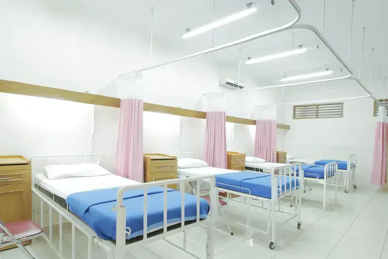

Tentang Kami
Mengenal lebih dekat Medical Indonesia: komitmen kami memberikan pelayanan kesehatan yang aman, bermutu, dan manusiawi.
Pelayanan kesehatan modern yang berpusat pada setiap pasien.
Sejak 2009, Medical Indonesia hadir melayani masyarakat di berbagai wilayah seluruh Indonesia. Tim klinis kami memadukan protokol berbasis bukti dengan pelayanan yang ramah dan mengutamakan pasien.


Mitra tepercaya dalam pelayanan kesehatan
Kami terus meningkatkan mutu layanan melalui audit berkala, pelatihan tenaga medis, dan umpan balik pasien.
Tindakan Medis Terlaksana
Di layanan umum dan spesialis
Tingkat Rekomendasi
Dari survei kepuasan pasien terverifikasi
Dokter & Tenaga Klinis Bersertifikat
Tersebar di 21 poliklinik dan unit layanan
Pelayanan yang dimulai dari mendengarkan
Memberikan layanan kesehatan paripurna yang aman, bermutu, dan terjangkau, dengan mendengarkan keluhan pasien sebagai langkah pertama setiap penanganan.
Menjadi rujukan kesehatan unggulan di Jawa Timur
Menjadi jaringan rumah sakit dan layanan kesehatan rujukan terpercaya di seluruh Indonesia dengan layanan terpadu, teknologi mutakhir, dan SDM profesional.
Martabat, kenyamanan, dan kejelasan
Setiap pasien dihormati, dirawat dengan nyaman, dan mendapat informasi medis yang jelas tentang diagnosis, tindakan, serta biaya.
Spesialisasi yang bekerja bersama
Tim multidisiplin berkolaborasi agar setiap diagnosis ditangani oleh keahlian yang tepat pada waktu yang tepat.